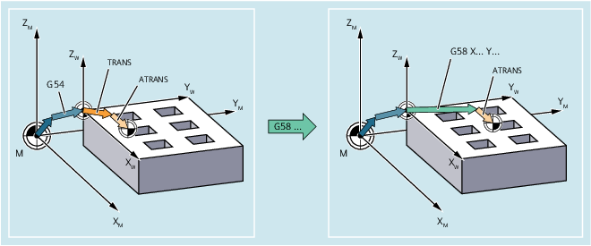
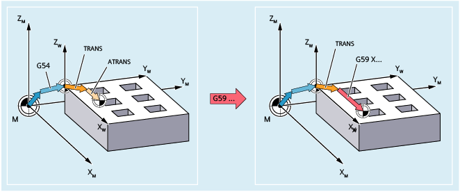

Using commands G58 and G59, the absolute and/or additive translation component of the programmable work offset (TRANS/ATRANS).
G58 replaces the absolute translation component (coarse offset) of the programmable work offset for the specified axis; the additive programmed work offset remains applicable.
G59 replaces the additive translation component (fine offset) of the programmable work offset for the specified axis; the absolute programmed work offset remains applicable.
G58 and G59 can only be used if the fine offset has been configured (MD24000 $MC_FRAME_ADD_COMPONENTS = 1).
| Replaces the absolute translation component of the programmable work offset for the specified axis. | |
Reference point: | Zero point of the current workpiece coordinate system set with G54 ... G57, G505 ... G599 (SZS) | |
Alone in the block: | Yes | |
| Replaces the additive translation component of the programmable work offset for the specified axis. | |
Reference point: | Zero point of the last workpiece coordinate system programmed via TRANS | |
Alone in the block: | Yes | |
| Offset values in the direction of the specified geometry axes (path, synchronous and positioning axes) As example, the following definitions should apply:
| |
| Program code | Comment |
|---|---|
| ... | |
| N50 TRANS X10 Y10 | ; Absolute translation component: X10 Y10 Z0 |
| N60 ATRANS X5 | ; Additive translation component: X5 Y0 Z0: → total offset: X15 Y10 Z0 |
| N70 G58 X20 Y20 | ; Absolute translation component: X20 Y20 Z0; → total offset X25 Y20 Z0 |
| N80 G59 X10 | ; Additive translation component: X10 Y0 Z0; → total offset X30 Y20 Z0 |
| ... |
See also:
Programmable work offset (G58, G59): Further information
Programmable frames (overview)